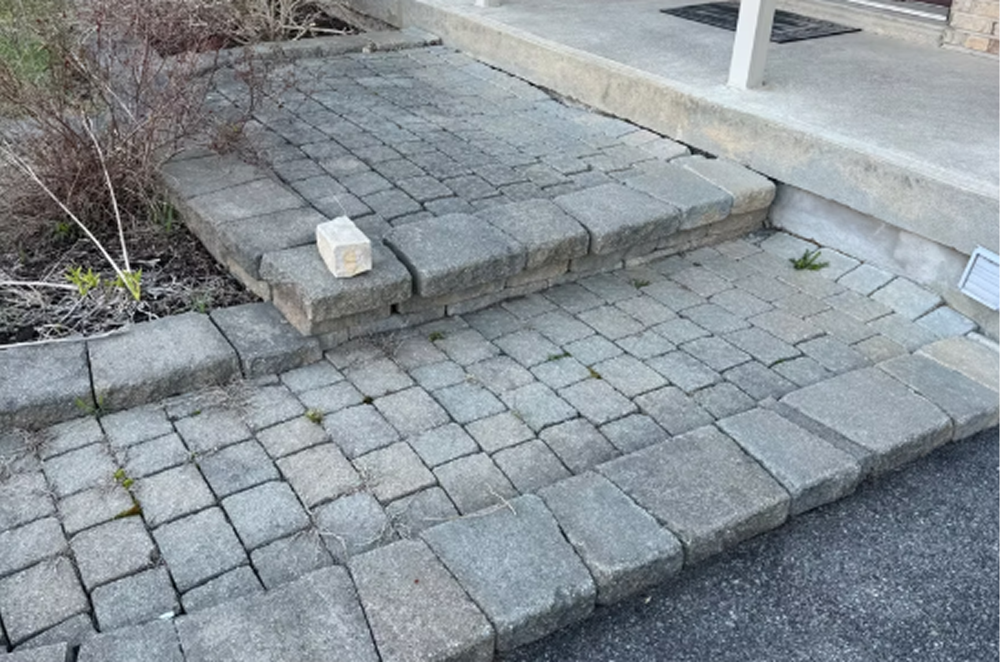

Nos Services
Excavation
- -Nivellement de terrain
- -Creusage de stationnement
- -Creusage pour cabanon
- -Drain de gouttière
- -Enlèvement d'asphalte et béton
- -Préparation pour asphalte
- -Location de pelle mécanique avec opérateur
- -Ramassage de matériaux
- Beaucoup plus encore contactez nous pour une soumission gratuite de votre projet!
Réparation de pavé
- -Désinstallation du pavé
- -Mise à niveau du pavé
- -Ajout de poussière de roche
- -Plaque vibrante
- -Ajout de sable polymère
- -Pose de Pavé-uni
Remise à neuf du pavé
- -Nettoyage des crevasses du pavé
- -Pose de sable polymère
- -Compactage du sable polymère
- -Isolation des crevasses pour l'eau
Scellant à pavé
- -Protège contre la décoloration causée par le climat
- -Protège contre les taches d'huile et autres résidus néfastes
- -Facilite l'entretien du pavé
- -Plusieurs sortes de scellant disponibles selon vos besoins